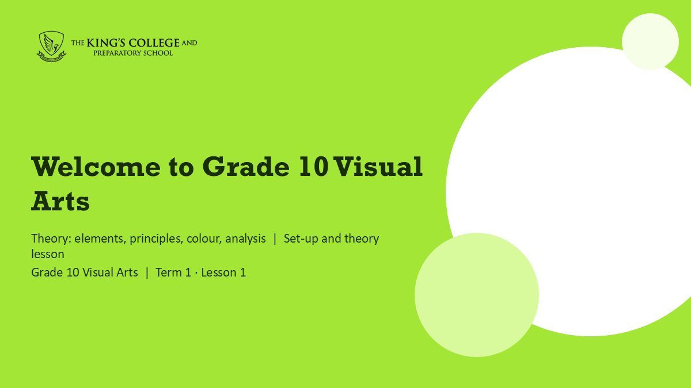

Term 1 · Lesson 1 · Theory lesson
Welcome to Grade 10 Visual Arts
Start here
Today I will
- Explain how Grade 10 Visual Arts is split into practical and theory
- Find the key dates on the assessment calendar
- Start my visual journal with a 'me as an artist' page
If an artist only ever showed you finished artworks, what would you never get to see?
Words to know
- FET
- Further Education and Training: the Grade 10 to 12 phase, which ends in the matric exams.
- PAT
- Practical Assessment Task: a set practical project with research, experiments and a final artwork.
- Visual journal (VJ)
- Your working book of ideas, research, sketches, experiments and notes for every project.
- SAGS
- The IEB Subject Assessment Guidelines: the document that says what Visual Arts covers and how it is assessed.
- Theory
- The written side of the subject: visual analysis, art history and context.
- Practical
- The making side of the subject: drawing, painting, printmaking, sculpture and other media.
Slides

Notes
What the FET course asks of you: practical work (PATs) and theory (visual analysis and art history), as set out in the IEB SAGS; the assessment calendar; the studio routine and care of materials; what a visual journal (VJ) is for.
Two halves of one subject
| Practical | Theory |
|---|---|
| PATs: set projects with a theme and a brief. | Visual analysis: describing and explaining artworks in writing. |
| Research, experiments and a final artwork. | Art history: from prehistoric art to the Rococo, including African art. |
| Marked on process (VJ) and on the final product. | Tested in cycle tests and exams with written answers. |
| Skills grow through drawing and trying new media. | Skills grow through looking closely and using the right art words. |
Studio routine and the VJ
- Arrive and set up: Fetch your VJ and materials quietly and check the board for the lesson's task.
- Care for materials: Close lids, wash brushes, sharpen pencils over the bin and return tools to where they belong.
- Last five minutes: Pack up, clean your area and store wet work on the drying rack.
- What the VJ is for: Ideas, mind maps, reference images, experiments, annotations and reflection, all dated.
- VJ every lesson: Almost every practical lesson ends with something new and annotated in your VJ.
The finished artwork is only half the story: your VJ tells the other half.
God filled Bezalel with skill and understanding to make beautiful things for the tabernacle. What does this suggest about creative ability as a gift?
Practical
You need: Visual journal, pencils, assessment calendar
Me as an artist
- Write today's date and the heading 'Me as an artist' on the first page of your VJ.
- List three things you love making, and add a small sketch beside each one.
- Write one skill you want to grow this year and why it matters to you.
- Name one artist you admire and write two sentences on what you like about their work.
- Stick the assessment calendar into the back of your VJ and circle the first PAT hand-in date.
- Decorate the page lightly so it shows something of who you are.
Test yourself
- What does the abbreviation PAT stand for?
- Name the two halves of Grade 10 Visual Arts.
- Give two things that belong in a visual journal.
Show answers
1. Practical Assessment Task. 2. Practical work and theory (visual analysis and art history). 3. Any two of: ideas, mind maps, reference images, experiments, annotations, reflections, dates.
Finished early?
Show both sides of Grade 10 Visual Arts on one VJ page: what you want to make and what you want to understand.
- Date a new VJ page and split it into two columns: 'Practical' and 'Theory'.
- Under Practical, draw three small thumbnails of artworks you would love to make this year.
- Under Theory, write three art words you already know, each with a one-line meaning.
- Circle one thing in each column that you most want to improve, and write why in one sentence.